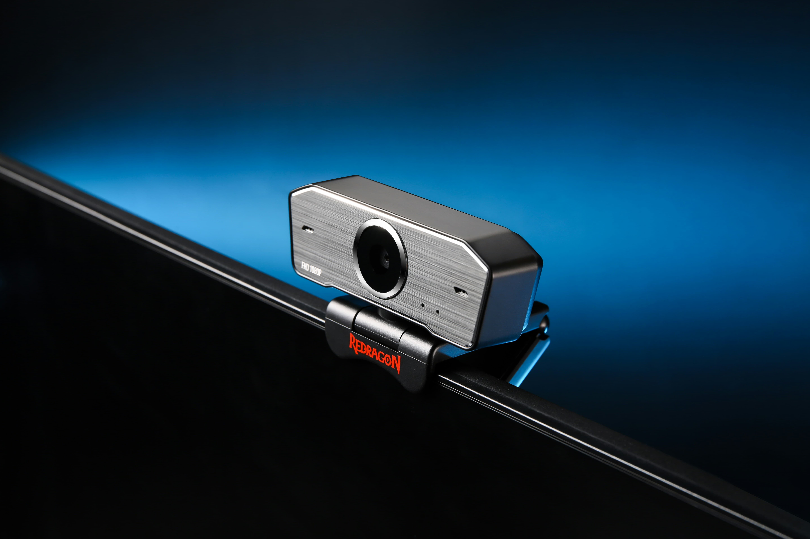

Why Camera Angle Matters More Than You Think
Camera angle affects every single metric that Omoggle's AI measures. It changes perceived jawline sharpness, canthal tilt, nose width relative to face width, cheekbone prominence, and facial symmetry. The same face shot from above scores measurably higher than the same face shot from below — sometimes by 1.5–2 full points.
The Angles, Ranked
Best: 15–25° above eye level
This is the gold standard for PSL scoring. Camera positioned above the eyes, angled slightly downward. This angle: emphasizes positive canthal tilt by making the outer eye corners appear to angle upward; compresses the lower face slightly, making jawlines appear sharper; reduces the visual dominance of the nose; and makes cheekbones appear higher and more prominent. All four effects directly raise Omoggle scores.
Good: Eye level, perfectly centered
Neutral and honest — produces a score closest to your "true" PSL. No angle-based manipulation but also no penalty. Useful as a baseline measurement.
Acceptable: 10° side angle
A slight turn to show your best profile side can help if you have one-sided features that are particularly strong. Don't exceed 15° — beyond that, the symmetry measurement degrades as the AI loses access to your full frontal face geometry.
Bad: Eye level from below
Camera below eye level (looking down into the lens) is the worst possible angle for AI scoring. It expands the lower face, minimizes canthal tilt, makes the nose appear wider, and creates unflattering shadow patterns under cheekbones. Even a face that would otherwise score 7.0 can drop to 5.0 from this angle.
Finding Your Best Side
Most people have a dominant side — usually the side you naturally turn toward in photos. Take three photos: straight on, 10° left, 10° right. Compare them side by side. Your best side typically shows sharper jawline definition or stronger cheekbone prominence on one side. For Omoggle specifically, always orient your best side slightly more toward the camera.
Distance Matters Too
Paired with angle, camera distance completes the setup. At close distance (30–40cm), wide-angle lens distortion is significant — nose appears wider, face appears rounder. At optimal distance (60–80cm), distortion is minimized and facial proportions appear natural and accurate. This is why phone selfies typically score lower than webcam shots with proper distance.
Test your angles right now — take three photos at different heights and compare your scores with our free AI Face Analyzer. The difference will be immediately visible.